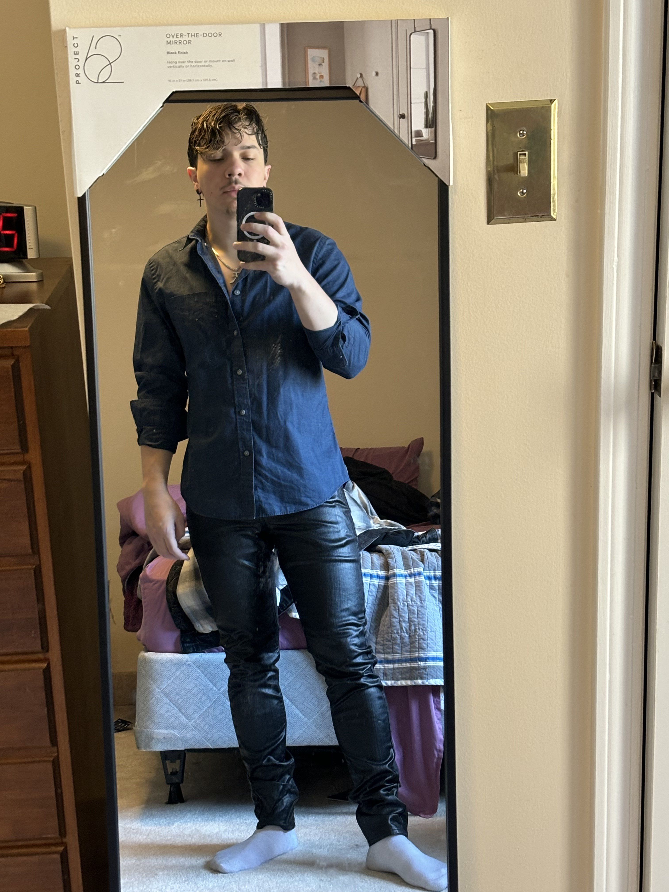

Michael Gonzales's Resume

About Me
I'm a software developer currently working in healthcare creating
.NET Framework tools for automation of our backend systems using C#
and SQL. I have dreams of moving to Front-End or Full Stack
development and one day Game Development.
Click here to learn more about who I am!
Education
-
B.S from University of Massachusetts Lowell: 09/2019 -
08/2021
- Major in Computer Science
- GPA: 3.03
-
A.S from Middlesex Community College: 09/2017 - 05/2019
- Major in Computer Science
- GPA: 3.35
Work Experience
-
Provider Ops Developer - Blue Cross Blue Shield of
Massachusetts
04/2023 - Present
-
Developed MS Access Form using VBA to automate
Attachmate Reflection IBM terminal tasks, saving 40+
hours per week.
-
Utilized C# to create Windows Form Applications for
internal teams, automating processes in Attachmate
Reflection IBM terminals and enhancing provider data
management tools.
-
Provided mentorship in software development practices
including C#, VB.NET, GitHub, and debugging to
colleagues.
-
Operations Application Developer - Spectrum Talent Director
03/2022 - 03/2023
-
Apprenticed at Blue Cross Blue Shield of MA in
Operations.
-
Received monthly training in Data Analytics software and
programming languages including C#, SQL, VB, and VBA.
-
Underwent mentoring to develop automation scripting for
IBM terminals and enhance skills in SQL and Microsoft
Access.
-
Software Development Lead - Eclipse Entertainment
12/2019 - 10/2021
-
Managed development schedule for a video game in Unity
at a start-up game development company
-
Partially developed A 2D side scroller adventure game
and a top-down hex-based tactical game
-
Specialized in developing movement controller, enemy AI,
and UI/UX features
-
Student Researcher - University of Massachusetts Lowell
06/2019 - 05/2021
-
Developed software for a UR5 Robot Arm utilizing Python
and C++ with ROS libraries
-
Designed user interfaces for a pick-and-place robot on
touch screens (Qt libraries for Python) and HoloLens 2
(Unity)
-
Co-Authored and published a
research paper
on the development of user interfaces
Skills
- C# | VB | VBA | SQL | .NET |
- Python | Java | JavaScript | HTML | CSS
- Unity | Unreal Engine 5
- CI/CD | Unit Testing | Lambda | OOP | GitHub | GitLab
Other